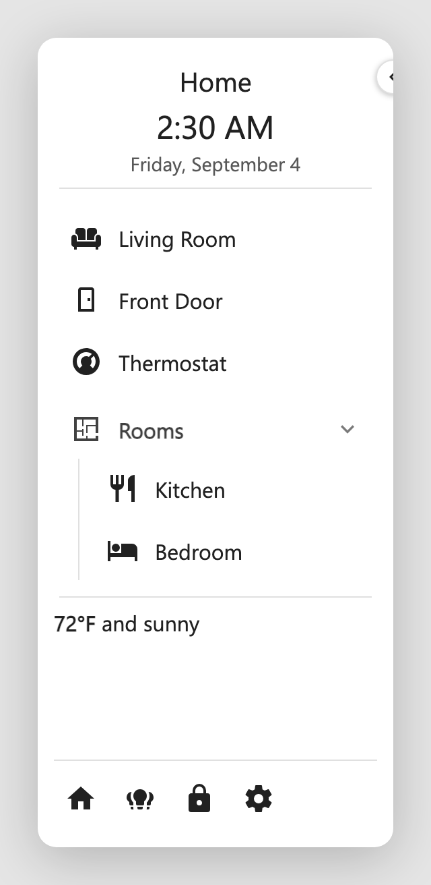
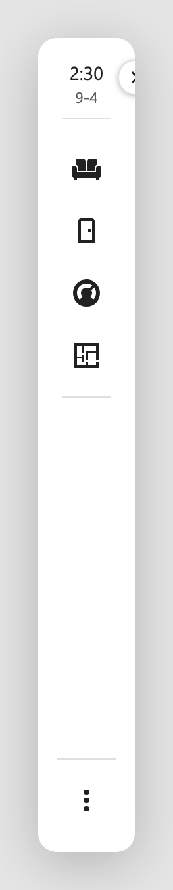

Dashboard Sidebar¶
A configurable sidebar for Home Assistant Lovelace dashboards. It docks to the
left or right of a dashboard view, pushes the view aside (rather than floating
over it), and is edited in place through a visual editor, with no YAML needed,
though everything it produces is plain YAML under a dashboard_sidebar key.
What it looks like¶


See it in action¶
The sidebar in the clip is styled with card-mod (gradient background, a gradient-fill title, and glows). Here is the exact config behind it:
The full dashboard_sidebar YAML behind this demo
dashboard_sidebar:
position: left
width: 240
start_collapsed: false
background: 'radial-gradient(120% 80% at 15% -10%, rgba(167,139,250,0.55) 0%, rgba(167,139,250,0) 58%), radial-gradient(90% 55% at 110% 105%, rgba(34,211,238,0.40) 0%, rgba(34,211,238,0) 55%), linear-gradient(165deg, #0a0f1f 0%, #141a35 48%, #1d1236 100%)'
card_mod:
style: |
.dashboard-sidebar-root {
border-right: 1px solid rgba(148,163,184,0.18);
box-shadow: inset 0 0 70px rgba(124,58,237,0.28);
}
.dashboard-sidebar-category-header {
text-transform: uppercase;
letter-spacing: 0.12em;
font-size: 0.72rem;
opacity: 0.85;
}
header:
- type: title
text: MY HOME
align: center
text_color: '#e9d5ff'
card_mod:
style: |
.dashboard-sidebar-title {
background: linear-gradient(90deg,#a78bfa,#22d3ee,#f0abfc,#a78bfa);
background-size: 300% auto;
-webkit-background-clip: text;
background-clip: text;
color: transparent;
letter-spacing: 0.20em;
}
- type: clock
format: '%-I:%M %p'
align: center
text_color: '#7dd3fc'
card_mod:
style: |
.dashboard-sidebar-clock {
text-shadow: 0 0 18px rgba(125,211,252,0.55);
font-weight: 400;
}
- type: date
format: '%A, %B %-d'
align: center
text_color: '#94a3b8'
- type: divider
color: rgba(148,163,184,0.30)
body:
- type: item
title: Overview
icon: mdi:view-dashboard-variant
icon_color: '#38bdf8'
text_color: '#e2e8f0'
tap_action:
action: navigate
navigation_path: /sidebar-test/home
- type: item
title: Devices
icon: mdi:devices
icon_color: '#facc15'
text_color: '#e2e8f0'
tap_action:
action: navigate
navigation_path: /sidebar-test/devices
- type: category
title: Rooms
text_color: '#cbd5e1'
icon: mdi:sofa
icon_color: '#a78bfa'
start_collapsed: false
guide_line: true
items:
- title: Living Room
text_color: '#e2e8f0'
icon: mdi:television-classic
icon_color: '#f0abfc'
tap_action:
action: navigate
navigation_path: /sidebar-test/living-room
- title: Kitchen
text_color: '#e2e8f0'
icon: mdi:silverware-fork-knife
icon_color: '#fb7185'
tap_action:
action: navigate
navigation_path: /sidebar-test/kitchen
- title: Basement
text_color: '#e2e8f0'
icon: mdi:stairs-down
icon_color: '#22d3ee'
tap_action:
action: navigate
navigation_path: /sidebar-test/basement
- type: category
title: Garden
text_color: '#cbd5e1'
icon: mdi:sprout
icon_color: '#4ade80'
start_collapsed: true
items:
- title: Irrigation
text_color: '#e2e8f0'
icon: mdi:water
icon_color: '#38bdf8'
tap_action:
action: navigate
navigation_path: /sidebar-test/garden
- title: Grow Lights
text_color: '#e2e8f0'
icon: mdi:lightbulb-on-outline
icon_color: '#fde047'
entity: light.grow_lights
tap_action:
action: toggle
- type: markdown
content: '**{{ states(''sensor.lights_on'') }}** lights on'
align: center
- type: divider
- type: card
align: center
background: rgba(15,23,42,0.45)
card:
type: gauge
entity: sensor.kitchen_minisplit_indoor_temperature
name: Living Room
min: 50
max: 90
severity:
green: 62
yellow: 76
red: 84
card_mod:
style: |
* {
background: none!important;
}
footer:
divider: true
buttons:
- icon: mdi:home
icon_color: '#38bdf8'
title: Home
tap_action:
action: navigate
navigation_path: /sidebar-test/0
- icon: mdi:lightbulb-group
icon_color: '#fde047'
title: All lights
entity: light.all_lights
tap_action:
action: toggle
- icon: mdi:thermostat
icon_color: '#fb7185'
title: Climate
tap_action:
action: navigate
navigation_path: /sidebar-test/climate
- icon: mdi:cog
icon_color: '#94a3b8'
title: Settings
tap_action:
action: navigate
navigation_path: /config/dashboard
- icon: mdi:abacus
tap_action:
action: none
icon_color: aqua
These docs show every task two ways
Each how-to has a Visual editor tab and a YAML tab. Pick one with the toggle on any example and the whole site follows you, on every page.
Highlights¶
- 🧩 Three regions: a header pinned to the top, a body that scrolls, and a footer pinned to the bottom.
- 🧱 Plenty to fill them with: titles, clocks, dates, dividers, tappable items, collapsible categories, Markdown blocks (markdown plus Jinja), and Cards, meaning any Lovelace card at all.
- ↔️ Collapses to an icon strip: one toggle on the edge and the whole thing narrows. Items keep hover tooltips, categories pop out their children.
- 👆 Tap, hold, and double tap: toggle, more-info, navigate, url, or call-service, each gesture with its own target. Navigation links highlight the page you're on and follow you as you move.
- 🪄 Jinja where it counts: text, icons, and color fields all template, so a lock icon can go red when it's unlocked. Markdown blocks get markdown and Jinja both.
- 📐 Docks where you want it: left or right, any width, pushing the view over or floating on top of it.
- 🎨 Wears your theme: colors, corners, shadows, and type follow the active Home Assistant theme, reading the same variables as HA's own nav sidebar.
- 🖌️ Styleable down to the pixel: per-element colors, any CSS background including gradients, and card-mod at both the whole sidebar and per-element level.
- 🖱️ Built by clicking, not typing: a five-tab editor (Settings, Header, Body, Footer, Mobile Bar, each named for the config key it edits) with a live preview that mirrors the real sidebar, drag-to-reorder, and a YAML escape hatch on every tab and element.
Requirements¶
- Home Assistant 2024.1 or newer.
- A Lovelace dashboard you can edit (any dashboard type). The sidebar is configured per dashboard.
- HACS to download the card. HACS is a separate, one-time add-on; if you do not have it yet, install it first (or add the card as a manual resource). See Install & Add.
- card-mod is optional, only needed for the advanced CSS styling in Styling. Everything else works without it.
At a glance¶
dashboard_sidebar:
position: left
header:
- type: clock
align: center
- type: date
align: center
- type: title
text: Hello Sam
align: center
body:
- type: item
title: Home
icon: mdi:home
tap_action:
action: navigate
navigation_path: /lovelace/home
footer:
buttons:
- icon: mdi:lightbulb
entity: light.kitchen
tap_action:
action: toggle
Head to Install & Add to get it onto a dashboard.